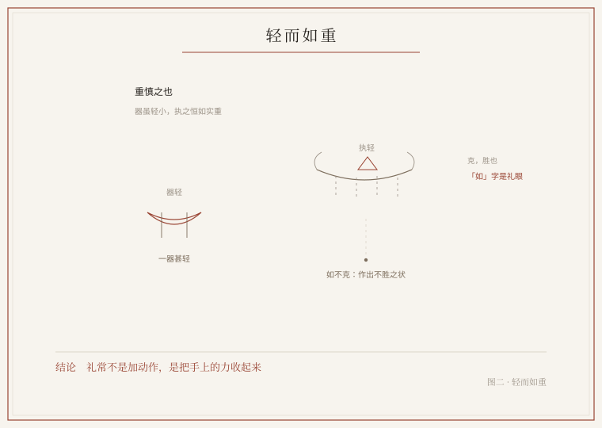

曲礼下 · 二·三 · 第 126 课
执君之器，虽轻必作不胜之状。注「重慎之也」。此节从「高度」转到「容仪」：不看手抬多高，看手怎么用力。
说什么事：凡执主器，执轻如不克。
落在哪一层：仪，兼及礼意——「如」字是礼意所在。
为何编在此位：上两节定了高度，高度是位置；此节定用力，用力是态度。位置之外，还得有容。
【经】凡執主器，執輕如不克。
【注】重慎之也。主，君也。克，勝也。
【疏】……礼，大夫称主，今此言「主」，上通天子诸侯，下含大夫为君者，故并曰「主」，士则不然。克，胜也。尊者之器，不论轻重，其臣执之，唯宜重慎，器虽轻小，而执之恒如实重，如不胜之容也。故《论语》云：「孔子执圭，鞠躬如也，如不胜。」《聘礼》曰：「上介执玉如重。」是也。
主器 注「主，君也」。疏「上通天子诸侯，下含大夫为君者」。士不在内——疏明言「士则不然」。
执轻 器本身轻。轻不是重点，重点是「轻而执之如重」。
如 礼的关键字。不是「不能」，是「像不能」。真不能是失职，像不能是敬。
克 注「胜也」。不克，不胜其重。
重慎 注三字。「重」是态度上的重量，「慎」是手上的分寸。
凡捧持君主的器物，即使轻巧，也要做出拿不动的样子。
器物之重，不在斤两，在所执者之尊。同一只杯子，自家的可以随手，君主的便要显得沉。这一「如」字，把力气收起来，让器物得到它应有的分量。
第一层 轻而如重，是收力 礼常常不是加动作，是减动作。此处减的是「显得轻松」这件事。
第二层 「如」的分寸 做得太过则像真不胜，成了无能；做得不够则像随手，成了轻慢。所以疏只说「如不胜之容」，容是神态，不是姿态。
第三层 主的范围 上通天子诸侯，下含大夫之为君者。礼的称谓从不整齐划一，总是按「谁是谁的君」来定。
第四层 与儒行同源 疏引《论语》「执圭，鞠躬如也，如不胜」，又引《聘礼》「上介执玉如重」。同一套身体语言，儒门与礼经共用，不是巧合，是同一条源。
与今日何干 替人保管要紧的东西，动作要「显出力不从心」——这是让对方放心的技术，也是最古老的信任仪式。
| 左 | 右 |
|---|---|
| 执主器 | 主者，君也，上通下含 |
| 执轻 | 器虽轻小 |
| 如不克 | 恒如实重，如不胜之容 |
| 重慎 | 重是态度，慎是手感 |
| 士则不然 | 此节不及士 |
| 孔子执圭如不胜 | 同一套身体语言 |
画一双手捧着一只极小极薄的器物（只画器物轮廓，不作花纹），手势下坠、指节微屈，仿佛承受着看不见的重量；掌心与器物之间空出一道细缝，不贴合。手的下方画一道极短的垂线，末端一个小点，像一线将断未断的坠感。左右各留大片空白，不画人、不写文字。赭色只用在器物轮廓上。
